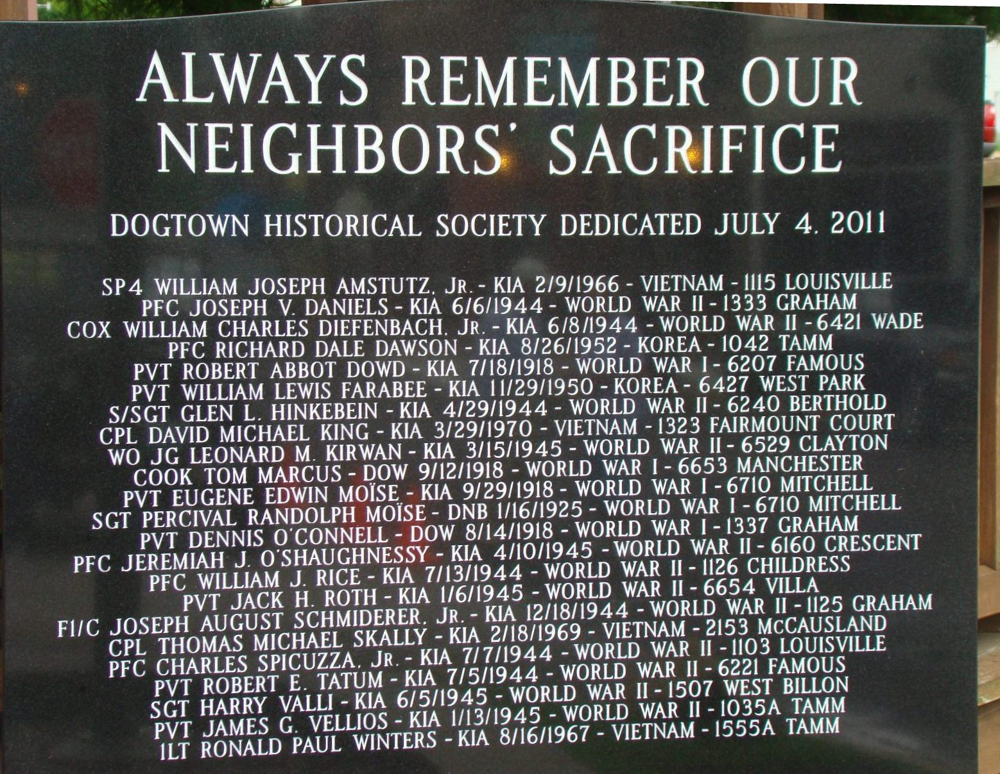
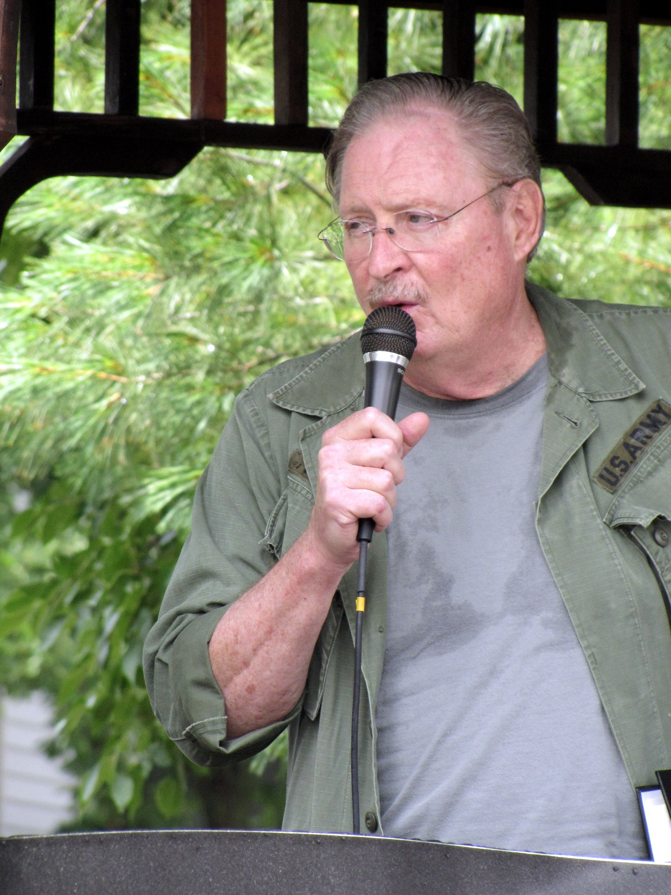
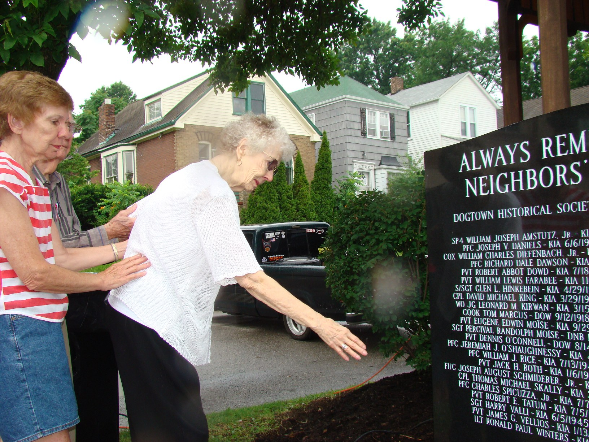
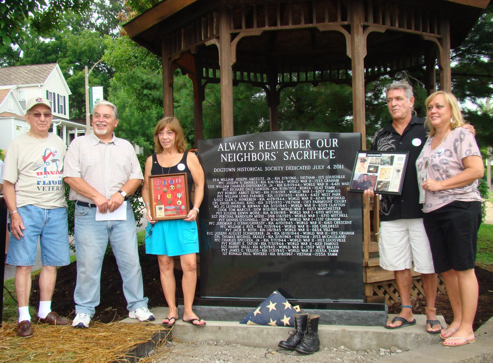
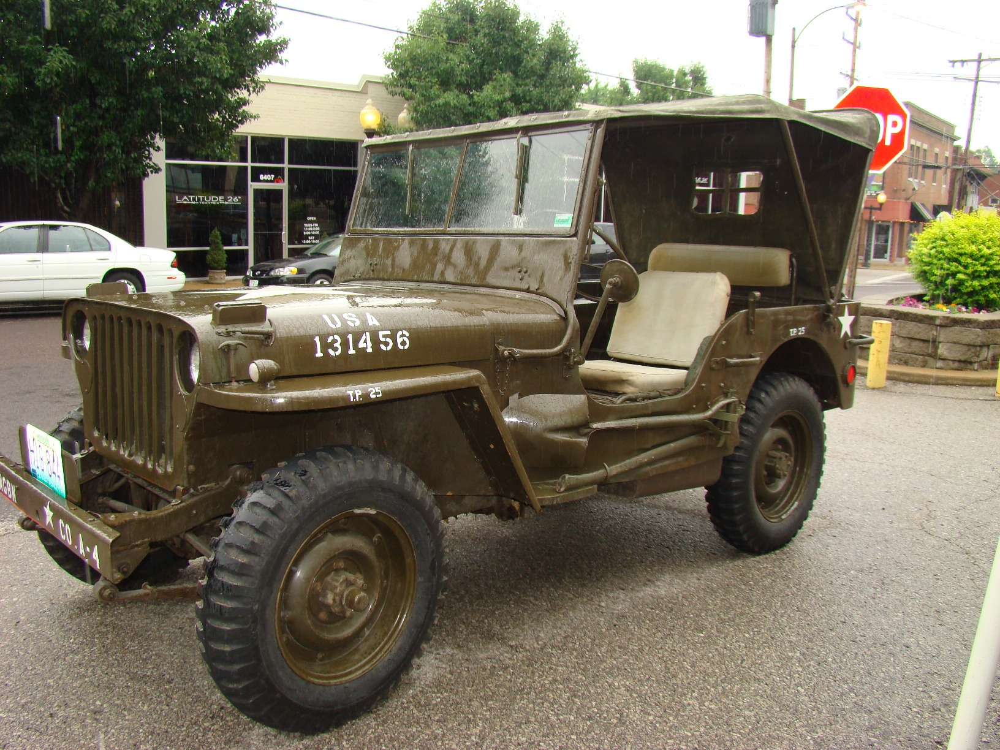
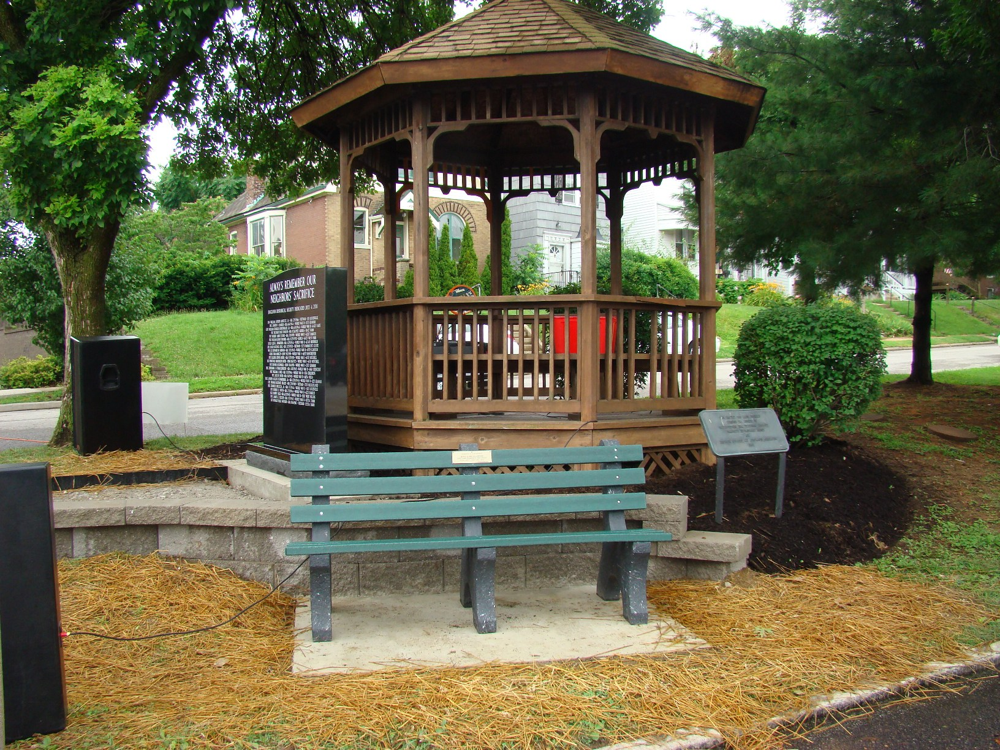
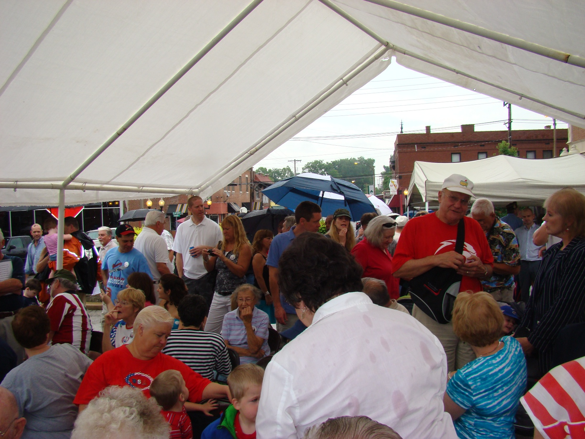

The Dogtown Veteran's Memorial Park is located at the intersection of Tamm and Clayton Avenues
| Contact us | | | DHS | | | Names on Stone | | | Donors List | | | Veteran's Info | | | Dogtowner Lists | | | Drummer Boy |

Dogtown Historical Society (DHS) president, John Corbett, began the ceremony by thanking those who helped make this dedication possible -(See above for a list of the donors, and see below this text for a link to a video of the ceremony).
John then thanked the veterans themselves; "these brave individuals who left their homes in Dogtown to go overseas and who lost their lives defending our freedom. It is for this reason that we honor their memory today with this beautiful tribute to their extreme sacrifice. It is vitally important that we and the generations that follow remember that the price of freedom is very high and we must always remember these brave neighbors who fought and died so that we could live our lives in peace in this wonderful neighborhood."
At this point he introduced the featured speaker; Jim Lohman, A/6 Bombardier Navigator, retired, a Dogtown neighbor since 1995 and decorated Navy Veteran. Jim had over 1,000 flight hours and 311 carrier arrestments. He participated in combat operations during Operation Desert Storm and received commendations including the Distinguished Flying Cross, 2 Strike/flight air medals and the Navy Commendation medal. Jim was asked to speak for the veterans who are present to honor their own.
Lastly, the Reverend Thomas A. Haller, a lifetime Dogtowner, was introduced. Tom is a Vietnam Army veteran, his father served in the U.S. Army in WW II and was a POW in Germany. Tom’s Grandpa Joe served in WW I. Tom offered the prayer and the blessing of the stone.
The second stage of the dedication of the Dogtown Veteran's Memorial park took place at noon on the Sunday of Veterans Day Weekend; November 13, 2011. At that dedication, on a beautiful fall day, the first 61 personalized memorial bricks, engraved with the names of Dogtown veterans laid in the area in front of the monument stone, were blessed by Father John Johnson of St. James the Greater Parish Church.
Please contact Bob Corbett if you know of any Dogtown family or Dogtown Veteran who would like to have an engraved brick placed in the garden.

|  |
|---|---|
| Jim Lohman, A/6 Bombardier Navigator, retired | The Reverend Tom Haller (Photo by Rich Sprandel) |

Marie Yoloures, mother of Ronald Paul Winters with her husband Paul and friend and neighbor Maureen Brady

Norm Merlotti and John Corbett and the family of David Michael King with family mementos

U.S. Army Jeep - thanks to owner: Joe La Macchia

|  |
|---|---|
| Before the stone was placed | Side View before the Ceremony |

A short surprise shower arrived right before the ceremony
But spirits weren't dampened this day; Lucy Corbett with rainbow umbrella

And just as the ceremony started the sun came out

After the ceremony many stayed to visit and to enjoy the food and refreshments
| HOME | DOGTOWN |
| Bibliography | Oral history | Recorded history | Photos |
| YOUR page | External links | Walking Tour |